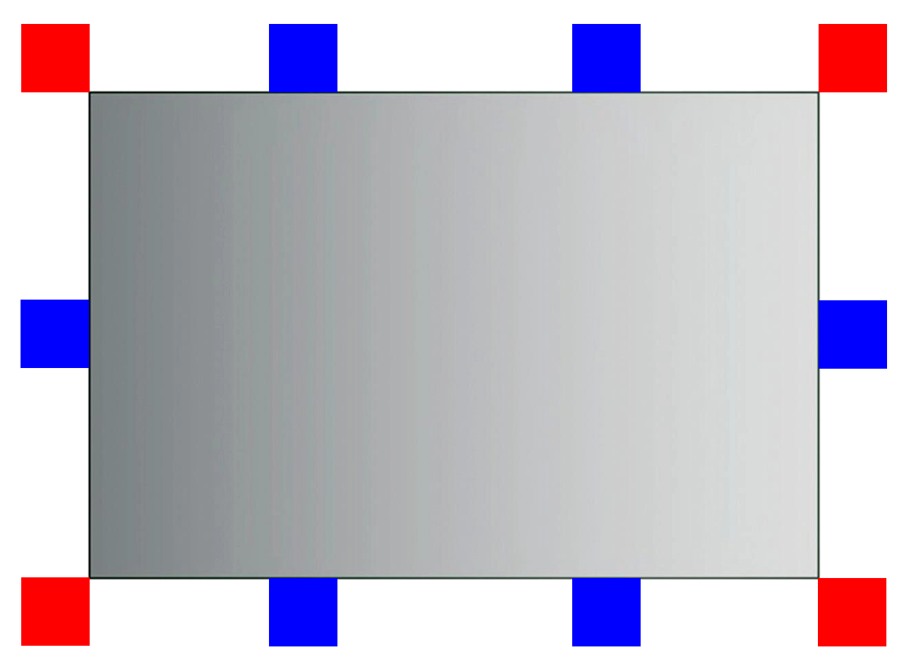
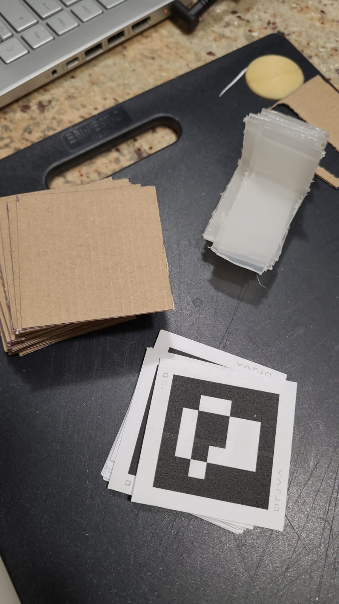

Il posizionamento dei marker deve essere tale da evitare problemi causati dalle braccia dell'utente che possono coprire marker durante l'interazione. In un qualunque momento inoltre sarebbe bene poter vedere (almeno) tre tracker in disposizione triangolare tra loro (non su una retta), quindi penso che una buona soluzione potrbbe del seguente tipo:
dove i marker rossi sono principali, mentre i marker blu sono secondari. Il funzionamento potrebbe seguire i seguenti casi:
Se nessuno dei casi descritti e' applicabile allora si perde il tracciamento, ma con queste regole mi sembra improbabile nei casi d'uso normali.
Un alternativa potrebbe essere prendere tutti i marker visibili, trovare tutti i triangoli presenti in quel momento e fare la media del tracciamento di ognuno, in questo modo la precisione sarebbe molto alta nel momento in cui si vede tutto e diminuirebbe nel momento in cui il numero di marker cala, fino a risultare minima con solo 3 tracker non tutti sullo stesso lato. (Per il momento questa alternativa, seppur piu' impegnativa computazionalmente, mi sembra molto piu' affidabile.)
Per poter attaccare i marker ai lati dello specchio ho stampato nuovi marker, incollati a cartone per evitare che si deformino e ho creato dei supporti a L per i marker per attaccarli ai lati della cornice dello specchio.
L'obiettivo di domani e' implementare il tracciamento della cornice, collocare l'interfaccia utente sulla cornice e verificare che l'interazione non vada a rompere il tracciamento.